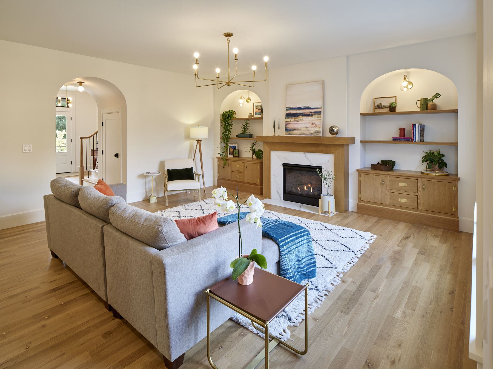
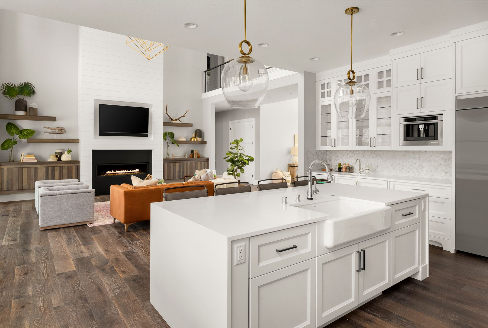

Interior painting in Vancouver, WA.
Interior painting means repainting the inside of your house — walls, ceilings, trim, doors, stairwells and built-in shelving. Fine Finishes NW paints interiors in Vancouver, Camas, Ridgefield, Battle Ground and the Portland area. We move and cover your furniture, fill and sand the walls, prime where it's needed, and clean up every evening so you can still live in the house while we work. Estimates are free and in writing.
You've heard the horror stories.
Furniture shoved into the middle of the room for a week. Dust on everything. A crew that shows up on Monday, vanishes Tuesday, and doesn't answer the phone Wednesday. Roller marks you only notice when the afternoon light hits the wall.
Interior work happens in the middle of your actual life — with your kids, your pets, your work calls and your dinners going on around it. That's the part most crews treat as your problem. We treat it as ours.
Older Vancouver homes bring their own quirks: settled plaster, painted-shut sash windows, forty years of accumulated trim layers. Newer builds need a flawless, uniform finish on big flat drywall planes where nothing hides. Both take a different approach, and we've done a lot of both.

Everything inside the walls.
Whole-house repaints, single rooms, or just the trim that's been bugging you for three years.
Walls
Cleaned, patched, sanded and primed where needed, then rolled to a consistent finish with no flashing, lap marks or thin spots — including the tall stairwell walls most crews would rather skip.
Ceilings
Flat, even ceiling coverage with clean lines where they meet the wall. We'll tell you honestly whether your ceilings need doing or whether you'd be spending money for nothing.
Trim & Baseboards
Filled, caulked and sanded before coating, so the finish is smooth to the touch rather than sitting on top of every old nick and gap. This is where a paint job either looks finished or doesn't.
Doors & Frames
Hardware removed rather than cut around. Doors finished so they close without sticking and don't tack up in summer heat — a detail you'll notice every single day.
Cabinets & Built-ins
Degreased, deglossed and sprayed to a hard, washable, factory-smooth finish. See cabinet refinishing for the full process.
Color & Sheen Guidance
Free help choosing colors and — just as important — the right sheen for each surface. We'll sample on your actual walls, because paint looks different in your light than in the store.

Your house, handed back every night.
- Everything gets covered. Floors, furniture, fixtures and landscaping — masked and protected before a lid comes off.
- We move the furniture. You don't need to empty the room before we arrive.
- Low-odor, low-VOC products as standard, so the house stays livable while we work.
- Tidied daily. Tools packed away, floors cleared, the kitchen usable — every evening, not just at the end.
- You know who's coming. The same trained, background-checked crew, not a rotating cast of subs.
- Working from home? Tell us and we'll sequence the rooms around your calls.
See the finish.
Real interiors we've painted, in homes across Southwest Washington.
Questions we get asked.
How long does an interior repaint take?
Two to four days for a few rooms; one to two weeks for a whole house, depending on size, how much trim there is, and how much repair the surfaces need. You get a schedule with your estimate, and we tell you the same day if anything shifts.
Do I have to leave the house?
Almost never. We use low-odor, low-VOC products and work room by room so you keep a functioning kitchen and bathroom throughout. If you're sensitive to smells or have a newborn, tell us and we'll plan around it.
Do you move furniture?
Yes — we move and cover it as part of the job. We'll ask you to handle genuinely irreplaceable items yourself, and we'll flag anything unusually heavy or fragile before we start rather than after.
How much dust will there be?
Sanding makes dust — that's unavoidable if the prep is being done properly. What we control is where it goes: plastic containment on the openings, and vacuum sanders on the bigger jobs. A crew that leaves no dust usually didn't sand.
What sheen should I choose?
As a rule: matte or eggshell on walls, satin in kitchens, baths and hallways where things get wiped, semi-gloss on trim and doors. Higher sheens are more washable but show every imperfection in the wall behind them — which is why sheen choice and prep quality are the same conversation.
Can you match a color I already have?
Yes. Bring us a chip, a leftover can, or let us take a sample off an inconspicuous spot and we'll get it matched. Fair warning: a match to faded 12-year-old paint will look slightly different next to it, because the old paint has shifted.
How soon can we move furniture back?
Usually the same evening for walls. Trim, doors and cabinets need longer to fully harden — typically a few days before heavy use, up to two weeks for a full cure. We'll tell you which surfaces need the extra patience.
Last updated